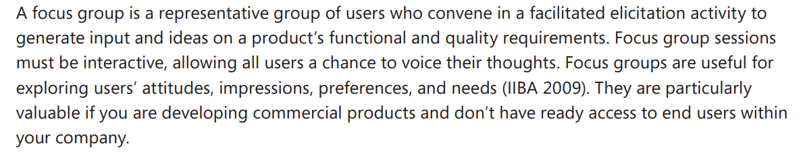
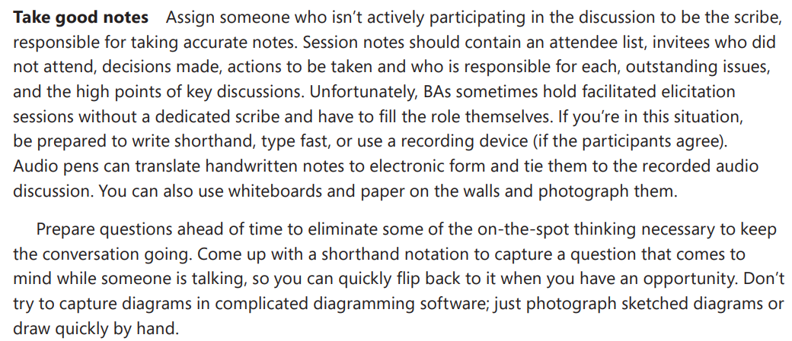

Lista de Verificação da Entrega Final
Introdução
Este documento apresenta uma lista de verificação para avaliar os artefatos produzidos na Entrega 5, tanto para o grupo quanto para o grupo +1.
Objetivo
- Fornecer critérios claros para verificação dos artefatos da Entrega .
- Garantir a padronização e qualidade dos documentos produzidos.
- Facilitar o processo de revisão pelos integrantes do grupo.
- Assegurar que todos os itens exigidos estejam completos e corretos.
Lista de Verificação dos integrantes
Na tabela 1, estão os itens de verificação relativos ao que cada integrante deve ter feito durante as entregas.
Tabela 1 – Lista de Verificação de inspeção dos integrantes
| ID | Item | Descrição | Autor | Fonte |
|---|---|---|---|---|
| 1 | Rich Picture | Criação de Rich Picture para visualização do problema | Ana Luiza Soares |  |
| 2 | Verificação E1 | Criou ao menos um item na verificação da Entrega 1 | Yzabella Miranda | |
| 3 | Elicitação | Participação em 1 (uma) técnica de elicitação | Lucas Alves | |
| 4 | Priorização | Participação em 1 (uma) técnica de priorização | Matheus de Alcântara | |
| 5 | Verificação E2 | Criou ao menos um item na verificação da Entrega 2 | Isaque Camargos | |
| 6 | Cenários | Pelo menos 2 cenários de requisitos não implementados | Othavio Bolzan | |
| 7 | Léxicos | Pelo menos 2 léxicos de requisitos não implementados | Kaleb Macedo | |
| 8 | Casos de Uso | Pelo menos 2 casos de uso de requisitos não implementados | Ana Luiza Soares | |
| 9 | Especificação Suplementar | Pelo menos 1 especificação suplementar | Yzabella Miranda | |
| 10 | Verificação E3 | Criou ao menos um item na verificação da Entrega 3 | Lucas Alves | |
| 11 | Requisitos Funcionais | Pelo menos 6 requisitos funcionais | Matheus de Alcântara | |
| 12 | Requisitos Não Implementados | Pelo menos 2 requisitos não implementados | Isaque Camargos | |
| 13 | NFR Framework | Pelo menos 1 NFR Framework | Othavio Bolzan | |
| 14 | Verificação E4 | Criou ao menos um item na verificação da Entrega 4 | Kaleb Macedo | |
| 15 | Elos de Rastreabilidade | Pelo menos 6 elos de requisitos funcionais | Ana Luiza Soares | |
| 16 | Verificação E6 | Criou ao menos um item na verificação da Entrega 6 | Yzabella Miranda | |
| 17 | Protótipo | Criou o protótipo de 2 requisitos não implementados | Lucas Alves | |
| 18 | Validação | Fez a validação com um usuário real do protótipo | Matheus de Alcântara | |
| 19 | Inspeção | Participou da inspeção e verificação | Isaque Camargos | |
Fonte: Autoria de Ana Luiza Soares, Matheus de Alcântara e Yzabella Miranda
Lista de verificação do Grupo
Tabela 2 – Lista de verificação das entregas do grupo
| ID | Entrega | Item de verificação | Autor | Fonte |
|---|---|---|---|---|
| 1 | Entrega 1 | O Rich Picture? | Ana Luiza Soares | |
| 2 | Entrega 2 | Pelo menos 1 perfil de usuário vindo de mais de uma técnica? | Yzabella Miranda | |
| 3 | Entrega 2 | Pelo menos uma persona? | Lucas Alves | |
| 4 | Entrega 2 | No mínimo quatro técnicas de elicitação? | Matheus de Alcântara | |
| 5 | Entrega 2 | Foram feitas 4 técnicas de priorização? | Isaque Camargos | |
| 6 | Entrega 2 | 2 técnicas de priorização junto além de MoSCoW e 100$? | Othavio Bolzan | |
| 7 | Entrega 2 | Todas as gravações com usuário real foram gravadas presencialmente? | Kaleb Macedo | |
| 8 | Entrega 3 | Pelo menos 14 cenários? (2 req. funcionais para cada integrante do grupo) | Ana Luiza Soares | |
| 9 | Entrega 3 | Pelo menos 1 léxico? | Yzabella Miranda | |
| 10 | Entrega 3 | Pelo menos 14 especificações de casos de uso? (2 req. funcionais para cada integrante do grupo) | Lucas Alves | |
| 11 | Entrega 3 | Pelo menos 7 especificações suplementares? | Matheus de Alcântara | |
| 12 | Entrega 4 | Todas as gravações com usuário real foram gravadas presencialmente? | Isaque Camargos | |
| 13 | Entrega 4 | Pelo menos 7 histórias de usuários? | Othavio Bolzan | |
| 14 | Entrega 4 | Pelo menos 7 itens no backlog? | Kaleb Macedo | |
| 15 | Entrega 5 | Pelo menos 7 especificações do NFR Framework? | Ana Luiza Soares | |
| 16 | Entrega 5 | Todas as gravações com usuário real foram gravadas presencialmente? | Yzabella Miranda | |
| 17 | Entrega 6 | Tem a tabela dos forward from e a tabela geral de rastreabilidade? | Lucas Alves | |
Fonte: Autoria de Ana Luiza Soares, Matheus de Alcântara e Yzabella Miranda
Lista de Verificação - Entrega 1
Tabela 3 – Lista de Verificação de Itens Técnicos e Documentais
| ID | Item de Verificação | Autor | Referência |
|---|---|---|---|
| 1 | O histórico de versão está padronizado no repositório? - Uso de convenções consistentes para registrar alterações no repositório do projeto. | André Barros de Sales | |
| 2 | Referências e bibliografia estão incluídas nos artefatos? - Citação correta de fontes utilizadas para fundamentar o projeto e seus artefatos. | André Barros de Sales | |
| 3 | Tabelas e imagens possuem legenda e fonte, e são citadas no texto? - Elementos visuais devidamente legendados, com fontes citadas e contextualizadas no texto. | André Barros de Sales | |
| 4 | Existe introdução explicando os artefatos desenvolvidos? - Texto introdutório explicando a função e o conteúdo dos artefatos apresentados. | André Barros de Sales | |
| 5 | O cronograma executado possui responsáveis e datas? - Planejamento real com datas e responsáveis, refletindo o que foi efetivamente feito. | André Barros de Sales | |
| 6 | As atas de reunião contêm data, horário, participantes e objetivos? - Documentos com registro formal das reuniões, contendo data, hora, participantes e objetivos. | André Barros de Sales | |
| 7 | As gravações de reuniões foram salvas? - Arquivos de vídeo das reuniões, armazenados para consulta futura. | André Barros de Sales | |
| 8 | As apresentações no YouTube estão configuradas como "não listado"? - Garantia de que os vídeos estão acessíveis apenas para quem tiver o link, respeitando a privacidade. | André Barros de Sales |

Fonte: Lucas Alves.
Tabela 4 – Lista de verificação baseado no plano de ensino
| ID | Item de Verificação | Autor | Referência |
|---|---|---|---|
| 1 | O Rich Picture possui legenda explicando os símbolos? - Explicações visuais dos elementos usados, facilitando o entendimento do diagrama. | André Barros de Sales | |
| 2 | O Rich Picture contém os 5 componentes obrigatórios (atores, operações, armazenamento de dados, setas e fronteira do sistema)? - Presença de atores, operações, dados, setas e fronteira do sistema, como exigido pela metodologia. | André Barros de Sales | |
| 3 | Todos os atores relevantes do sistema estão representados por ilustrações (usuário, administradores, etc.)? - Inclusão de personagens importantes do sistema, como usuários e administradores, de forma ilustrada. | Lucas Alves | |
| 4 | As operações estão desenhadas com formato oval? - Padronização das ações ou funções do sistema com formas ovais, conforme a convenção. | Matheus de Alcântara | |
| 5 | Os dados estão identificados como figuras retângulares? - Informações ou bancos de dados representados por retângulos, seguindo a simbologia correta. | Yzabella Miranda | |
| 6 | A legenda condiz com o rich picture apresentado? - Alinhamento entre os símbolos definidos na legenda e o que aparece no diagrama. | Ana Luiza Soares | |
| 7 | Existem setas representando o fluxo de informações ou possíveis interações entre atores e sistema? - Representação gráfica das interações e comunicação entre partes do sistema. | Kaleb Macedo | |
| 8 | Existe um contorno (linha contínua ou tracejada) delimitando claramente o que está sob responsabilidade do sistema? - Linha (contínua ou tracejada) indicando claramente o que está dentro e fora do escopo do sistema. | Isaque Camargos | |
| 9 | Grupos de usuários similares são representados por um único ator, conforme apropriado? - Redução de redundâncias ao representar grupos semelhantes por um único ator. | Othavio Bolzan | |
| 10 | Cada integrante elaborou ao menos 1 conteúdo com referência e imagem da fonte? - Garantia de que todos os membros contribuíram com pelo menos um conteúdo ilustrado e referenciado. | André Barros de Sales |


Fonte: Lucas Alves.
Lista de Verificação - Entrega 2
Tabela 5 – Lista de Verificação baseado no plano de ensino
| ID | Item de Verificação | Autor | Referência |
|---|---|---|---|
| 1 | A Especificação do Perfil do usuário possui informação de: idade, experiência, atitudes e tarefas primárias. | André Barros de Sales | |
| 2 | Um cronograma (data e horário) e local para realização da elicitação dos requisitos com o cliente e/ou persona do projeto? | André Barros de Sales | |
| 3 | No mínimo três técnicas de elicitação foram utilizadas? | André Barros de Sales | |
| 4 | A participação do cliente e/ou persona na elicitação de requisitos? | André Barros de Sales | |
| 5 | A gravação e o(s) registro(s) da elicitação dos requisitos (pré-rastreabilidade)? | André Barros de Sales | |
| 6 | Um cronograma (data e horário) e local para realização da priorização dos requisitos com o cliente e/ou persona do projeto? | André Barros de Sales | |
| 7 | No mínimo duas técnicas de priorização foram utilizadas? | André Barros de Sales | |
| 8 | A participação do cliente e/ou persona no processo de priorização? | André Barros de Sales | |
| 9 | A gravação e o(s) registro(s) da atividade de priorização dos requisitos? | André Barros de Sales | |
| 10 | Cada integrante da equipe elaborou pelo menos um item do conteúdo da disciplina com referência bibliográfica da fonte e foto do texto referência? | André Barros de Sales |

Fonte: Lucas Alves.
Tabela 5 – Lista de Verificação de itens Técnicos e Documentais
| ID | Item de Verificação | Autor | Referência |
|---|---|---|---|
| 1 | O histórico de versão está padronizado no repositório? - Uso de convenções consistentes para registrar alterações no repositório do projeto. | André Barros de Sales | |
| 2 | Referências e bibliografia estão incluídas nos artefatos? - Citação correta de fontes utilizadas para fundamentar o projeto e seus artefatos. | André Barros de Sales | |
| 3 | Tabelas e imagens possuem legenda e fonte, e são citadas no texto? - Elementos visuais devidamente legendados, com fontes citadas e contextualizadas no texto. | André Barros de Sales | |
| 4 | Existe introdução explicando os artefatos desenvolvidos? - Texto introdutório explicando a função e o conteúdo dos artefatos apresentados. | André Barros de Sales | |
| 5 | O cronograma executado possui responsáveis e datas? - Planejamento real com datas e responsáveis, refletindo o que foi efetivamente feito. | André Barros de Sales | |
| 6 | As atas de reunião contêm data, horário, participantes e objetivos? - Documentos com registro formal das reuniões, contendo data, hora, participantes e objetivos. | André Barros de Sales | |
| 7 | As gravações de reuniões foram salvas? - Arquivos de vídeo das reuniões, armazenados para consulta futura. | André Barros de Sales | |
| 8 | As apresentações no YouTube estão configuradas como "não listado"? - Garantia de que os vídeos estão acessíveis apenas para quem tiver o link, respeitando a privacidade. | André Barros de Sales |
Fonte: Lucas Alves.
Tabela 7 – Lista de Verificação do Peril de Usuário
| ID | Item de Verificação | Autor | Referência |
|---|---|---|---|
| 1 | O perfil do usário foi definido claramente de forma que auxilia no recrutamento dos futuros participantes? | Ana Luiza Soares | |
| 2 | Há a faixa etária do usuário ? | Isaque Camargos | |
| 3 | O perfil possui dados sobre a frequência e forma de uso da tecnologia por esse usuário? | Kaleb Macedo | |
| 4 | Foram identificadas aplicações ou ferramentas mais utilizadas? | Lucas Alves | |
| 5 | Está alinhado com funcionalidades reais do sistema? | Matheus de Alcântara | |
| 6 | O perfil é tratado como um artefato interativo, passível de revisão e refinamento ao longo do projeto? | Othavio Bolzan | |
| 7 | Os dados dos usuários foram adequadamente coletados? | Yzabella Miranda |


Fonte: Lucas Alves.
Tabela 8 – Lista de Verificação de Personas
| ID | Item de Verificação | Autor | Referência |
|---|---|---|---|
| 1 | A persona tem uma história que o contextualiza com sua realidade, no caso a sua identidade? | Kaleb Macedo |  Livro IHC |
| 2 | A persona está definida como usuário primário, secundário, outro stakeholder ou anti-usuário, quem não vai utilizar o sistema, logo não deve influenciar? | Ana Luiza Soares |  Livro IHC |
| 3 | A persona foi definida com base nos objetivos do domínio de atividade do usuário? | Yzabella Miranda | Livro IHC |
| 4 | Aponta frustrações ou problemas enfrentados com sistemas anteriores? | Matheus de Alcântara |  Livro Interaction Design: Beyond Human-Computer Interaction |
| 5 | As habilidades da persona identificada não se limitam ao nosso produto em específico? | Isaque Camargos | Livro IHC |
| 6 | A persona possui expectativas sobre como o sistema ou produto deve funcionar? | Lucas Alves | Livro IHC |
| 7 | Os requisitos da persona estão detalhados? | Othavio Araujo Bolzan | Livro IHC |
| 8 | Há ao menos uma persona por papel de usuário? | Isaque Camargos | Barbosa, S. D. J. et al., Livro IHC |
| 9 | Tem uma imagem ou representação visual que a torne memorável? | Lucas Alves | Livro IHC |
| 10 | A persona é derivada de dados reais coletados com usuários ou stakeholders reais? Possíveis usuários típicos? | Kaleb Macedo | Livro IHC |
Fonte: Kaleb Macedo.
Tabela 9 – Lista de Verificação de Entrevista
| ID | Item de Verificação | Autor | Referência |
|---|---|---|---|
| 1 | O tipo de entrevista (estruturada, semiestruturada, não estruturada) foi respeitado? | Isaque Camargos | |
| 2 | As perguntas ou tópicos estavam claros, sem termos técnicos ou jargões inadequados? | Isaque Camargos | |
| 3 | As perguntas abertas foram exploradas com aprofundamento quando as respostas foram superficiais? | Isaque Camargos | |
| 4 | O roteiro foi previamente definido ? | Isaque Camargos | |
| 5 | As perguntas do roteiro seguiram uma ordem lógica ? | Isaque Camargos | |
| 6 | O entrevistador manteve o foco no objetivo da entrevista ? | Isaque Camargos | |
| 7 | O entrevistador manteve uma postura neutra ? | Isaque Camargos | |
| 8 | O entrevistador se apresentou ? | Isaque Camargos | |
| 9 | O entrevistador fez um período de aquecimento ? | Isaque Camargos | |
| 10 | O entrevistador concluiu a reunião formalmente ? | Isaque Camargos |


Fonte: Isaque Camargos.
Tabela 10 – Lista de Verificação de Introspecção
| ID | Item de Verificação | Autor | Referência |
|---|---|---|---|
| 1 | A introdução apresenta de forma clara a técnica de introspecção aplicada? | Lucas Alves | |
| 2 | O artefato explicita a metodologia utilizada e identifica os participantes? | Lucas Alves | |
| 3 | Existe cronograma com data e horário da aplicação da técnica para cada participante? | Lucas Alves | |
| 4 | As tabelas de requisitos estão organizadas com tipo, descrição, ID e status de implementação? | Lucas Alves | |
| 5 | Há distinção clara entre requisitos funcionais e não funcionais? | Lucas Alves | |
| 6 | Os requisitos possuem rastreabilidade com os códigos das listas principais (ex: RF01, RNF02)? | Lucas Alves | |
| 7 | O artefato contém considerações finais com análise crítica dos resultados da introspecção? | Lucas Alves | |
| 8 | Há link de vídeo de apresentação da elicitação no YouTube incluído no documento? | Lucas Alves | |
| 9 | O histórico de versões está presente e padronizado com data, descrição e autores/revisores? | Lucas Alves | |
| 10 | Tabelas possuem legendas e fontes, e estão devidamente referenciadas no corpo do texto? | Lucas Alves |

Tabela 11 – Lista de Verificação do Questionário
| ID | Item de Verificação | Autor | Referência |
|---|---|---|---|
| 1 | As funcionalidades mais utilizadas ou apontadas como importantes pelos usuários foram efetivamente mapeadas como requisitos funcionais? | Kaleb Macedo |  Livro Engenharia de Requisitos |
| 2 | As dificuldades técnicas citadas pelos usuários (ex: lentidão, instabilidade, falta de clareza) foram traduzidas em requisitos não funcionais claros? | Kaleb Macedo | Livro Engenharia de Requisitos |
| 3 | As sugestões textuais espontâneas (como melhorias desejadas e novos recursos) foram analisadas para originar requisitos adicionais ou melhorias? | Kaleb Macedo | Livro Engenharia de Requisitos |
| 4 | Existe uma classificação explícita e correta entre requisitos funcionais (RF) e não funcionais (RNF)? | Kaleb Macedo | Livro Engenharia de Requisitos |
| 5 | Requisitos relacionados à acessibilidade e usabilidade contemplam todos os públicos (ex: idosos, leitores de tela, navegação por smartphone)? | Kaleb Macedo | Livro Engenharia de Requisitos |
| 6 | Os requisitos estão justificados por evidências quantitativas ou qualitativas oriundas da pesquisa? | Kaleb Macedo | Livro Engenharia de Requisitos |
| 7 | Os principais problemas citados pelos usuários (ex: ausência de extrato diário, busca ineficiente) foram abordados em requisitos específicos? | Kaleb Macedo | Livro Engenharia de Requisitos |
| 8 | Há sinalização clara de quais requisitos ainda não foram implementados, com potencial para priorização futura? | Kaleb Macedo | Livro Engenharia de Requisitos |
| 9 | A experiência do usuário real (UX) foi utilizada para sugerir mudanças de interface, navegação ou hierarquia de informações? | Kaleb Macedo | Livro Engenharia de Requisitos |
| 10 | O relatório oferece recomendações objetivas de evolução com base nos dados coletados, indo além da descrição dos problemas? | Kaleb Macedo | Livro Engenharia de Requisitos |
Fonte: Kaleb Macedo.
Tabela 12 – Lista de Verificação do Questionário
| ID | Item de Verificação | Autor | Referência |
|---|---|---|---|
| 1 | As personas foram devidamente consideradas na priorização (motivações, frustrações, objetivos, dispositivo de acesso)? | Kaleb Macedo |  Livro Engenharia de Requisitos |
| 2 | Cada requisito funcional foi classificado com base na sua importância para a persona primária e secundária? | Kaleb Macedo | Livro Engenharia de Requisitos |
| 3 | A priorização levou em conta os critérios de frequência de uso e criticidade da funcionalidade? | Kaleb Macedo | Livro Engenharia de Requisitos |
| 4 | Requisitos do tipo Must foram claramente identificados e estão implementados ou planejados com prioridade máxima? | Kaleb Macedo | Livro Engenharia de Requisitos |
| 5 | Requisitos do tipo Should e Could foram registrados com justificativas para priorização em fases futuras? | Kaleb Macedo | Livro Engenharia de Requisitos |
| 6 | Os requisitos Won’t foram definidos com clareza, indicando que não serão tratados nesta versão do sistema? | Kaleb Macedo | Livro Engenharia de Requisitos |
| 7 | A tabela final de MoSCoW está organizada de forma legível, por tipo de requisito (Funcional / Não Funcional) e por persona? | Kaleb Macedo | Livro Engenharia de Requisitos |
| 8 | Há documentação ou registro da participação dos stakeholders ou personas no processo de priorização? | Kaleb Macedo | Livro Engenharia de Requisitos |
| 9 | A lista de requisitos priorizados será utilizada como base para o planejamento incremental de entregas e releases? | Kaleb Macedo | Livro Engenharia de Requisitos |
Fonte: Kaleb Macedo.
Tabela 13 – Lista de Verificação do Peril de Usuário
| ID | Descrição da verificação | Participante | Evidência |
|---|---|---|---|
| 1 | Verificar se a elaboração do glossário foi iniciada já nas atividades de elicitação, durante a análise do domínio do problema e das necessidades de negócio. | Ana Luiza Soares |  (VAZQUEZ, Bruno; SIMÕES, André; ALBERT, Endrew. Engenharia de requisitos: software orientado ao negócio. 1. ed. Rio de Janeiro: Elsevier, 2013.) |
| 2 | Verificar se foram identificados termos únicos para o domínio, que não aparecem em outros contextos do projeto. | Ana Luiza Soares |  (VAZQUEZ, Bruno; SIMÕES, André; ALBERT, Endrew. Engenharia de requisitos: software orientado ao negócio. 1. ed. Rio de Janeiro: Elsevier, 2013.) |
| 3 | Verificar se foram capturados termos que têm mais de uma definição, evitando ambiguidades. | Ana Luiza Soares |  (VAZQUEZ, Bruno; SIMÕES, André; ALBERT, Endrew. Engenharia de requisitos: software orientado ao negócio. 1. ed. Rio de Janeiro: Elsevier, 2013.) |
| 4 | Verificar se foram incluídos termos com definição local distinta do senso comum, garantindo clareza para todos os envolvidos. | Ana Luiza Soares |  (VAZQUEZ, Bruno; SIMÕES, André; ALBERT, Endrew. Engenharia de requisitos: software orientado ao negócio. 1. ed. Rio de Janeiro: Elsevier, 2013.) |
| 5 | Verificar se foram listados termos com potencial de causar dificuldades de entendimento, sustentando a pesquisa junto às partes interessadas. | Ana Luiza Soares |  (VAZQUEZ, Bruno; SIMÕES, André; ALBERT, Endrew. Engenharia de requisitos: software orientado ao negócio. 1. ed. Rio de Janeiro: Elsevier, 2013.) |
| 6 | Verificar se foram considerados termos técnicos do negócio (jargões, processos internos etc.). | Ana Luiza Soares | VAZQUEZ, Bruno; SIMÕES, André; ALBERT, Endrew. Engenharia de requisitos: software orientado ao negócio. 1. ed. Rio de Janeiro: Elsevier, 2013. |
| 7 | Verificar se foram incluídas abreviações e siglas relevantes ao escopo, com suas respectivas explicações. | Ana Luiza Soares |  (VAZQUEZ, Bruno; SIMÕES, André; ALBERT, Endrew. Engenharia de requisitos: software orientado ao negócio. 1. ed. Rio de Janeiro: Elsevier, 2013.) |
| 8 | Verificar se foram mapeados termos que são sinônimos ou antônimos, usando remissivas simples e cruzadas para facilitar a consulta. | Ana Luiza Soares |  (VAZQUEZ, Bruno; SIMÕES, André; ALBERT, Endrew. Engenharia de requisitos: software orientado ao negócio. 1. ed. Rio de Janeiro: Elsevier, 2013.) |
Fonte: Autoria de Ana Luiza Soares
Tabela 14 – Lista de Verificação do Grupo Focal
| ID | Item de verificação | Autor | Referência |
|---|---|---|---|
| Q1 | O objetivo da reunião está claro para todos os participantes? | Matheus de Alcântara |  |
| Q2 | A reunião foi realizada com representantes dos usuários? | Matheus de Alcântara | |
| Q3 | Foi definida uma pauta com os principais temas da discussão? | Matheus de Alcântara |  |
| Q4 | O facilitador conduziu a sessão de forma neutra e produtiva? | Matheus de Alcântara |  |
| Q5 | Os participantes foram incentivados a dar suas opiniões livremente? | Matheus de Alcântara | |
| Q6 | A sessão foi gravada ou registrada por alguém para garantir que nada fosse perdido? | Matheus de Alcântara | |
| Q7 | Foi preparado algum material de apoio, como protótipos ou exemplos, para facilitar a discussão? | Matheus de Alcântara | |
| Q8 | Os resultados da reunião serão compartilhados com os envolvidos para revisão e complementação? | Matheus de Alcântara |
Autor: Matheus de Alcântara
Tabela 15 – Lista de Verificação 100 Dólares
| ID | Item de Verificação | Autor | Referência |
|---|---|---|---|
| 1 | A equipe de priorização recebeu exatamente 100 dólares imaginários para distribuir? | Isaque Camargos | |
| 2 | Nenhum requisito recebeu mais do que 100 dólares ? | Isaque Camargos | |
| 3 | A soma de todos os valores deu exatamente 100 dólares ? | Isaque Camargos | |
| 4 | Foi feito a média dos valores que cada requisito recebeu ? | Isaque Camargos | |
| 5 | A parte interessada foi instruída para evitar manipulações nos valores ? | Isaque Camargos | |
| 6 | A distribuição de dinheiro foi feita com base no desejo das partes interessadas ? | Isaque Camargos | |
| 7 | Se o dinheiro acabou, todo o resto foi dado com valor 0 ? | Isaque Camargos | |
| 8 | Cada participante realizou sua própria alocação de forma independente ? | Isaque Camargos |


Fonte: Isaque Camargos.
Tabela 16 – Lista de Verificação First Thing First
| ID | Descrição da verificação | Participante | Evidência |
|---|---|---|---|
| 1 | Verificar se todos os requisitos foram listados em uma planilha, considerando dependências lógicas entre eles. | Ana Luiza Soares |  (SERRANO; SERRANO, Aula 07, p. 37, 2023) |
| 2 | Confirmar se o benefício relativo de cada requisito foi avaliado em escala numérica (1 a 9) com participação do cliente. | Ana Luiza Soares |  (SERRANO; SERRANO, Aula 07, p. 38, 2023) |
| 3 | Assegurar que a penalidade relativa (impacto de não implementar o requisito) foi definida em escala numérica (1 a 9). | Ana Luiza Soares |  (SERRANO; SERRANO, Aula 07, p. 38, 2023) |
| 4 | A coluna valor total é a soma de (peso do benefício × valor do benefício) + (peso da penalidade × valor da penalidade). | Ana Luiza Soares |  (SERRANO; SERRANO, Aula 07, p. 38, 2023) |
| 5 | Verificar se o custo relativo da implementação está entre 1 e 9. | Ana Luiza Soares |  (SERRANO; SERRANO, Aula 07, p. 38, 2023) |
| 6 | Os desenvolvedores levaram em consideração os custos com base em fatores como complexidade de implementação, interface necessária, potencial de reutilização e níveis de testes e documentação. | Ana Luiza Soares |  (SERRANO; SERRANO, Aula 07, p. 39, 2023) |
| 7 | Assegurar que a priorização seguiu a fórmula: Valor % / (Custo % × Peso + Risco % × Peso). | Ana Luiza Soares |  (SERRANO; SERRANO, Aula 07, p. 38, 2023) |
| 8 | Verificar se a lista final de requisitos foi ordenada em ordem decrescente de prioridade calculada. | Ana Luiza Soares |  (SERRANO; SERRANO, Aula 07, p. 39, 2023) |
Fonte: Autoria de Ana Luiza Soares
Tabela 17 – Lista de Verificação Three Level Scale
| ID | Descrição da verificação | Participante | Evidência |
|---|---|---|---|
| 1 | Verificar se todos os requisitos foram listados em três categorias. | Yzabella Miranda | |
| 2 | Confirmar se a prioridade foi extabelecida por uma tabela de importância x urgência | Yzabella Miranda | |
| 3 | Verificar se existe uma priorização pra cada requisito. | Yzabella Miranda | |
| 4 | Confirmar se as partes interessadas concordaram na prioritização da escala de importância x urgência | Yzabella Miranda | |
| 5 | As prioridades altas são importantes e urgentes? | Yzabella Miranda | |
| 6 | As prioridades médias são importante, mas não são urgentes? | Yzabella Miranda | |
| 7 | As prioridades baixas não são importantes e urgentes? | Yzabella Miranda | |
| 8 | O número de altas está elevado? | Yzabella Miranda |


Fonte: Autoria de Yzabella Miranda
Listas de Verificação - Entrega 3
Tabela 18 – Lista de Verificação 1
| ID | Item de Verificação | Autor | Referência |
|---|---|---|---|
| 1 | As especificações dos cenários para o projeto. | André Barros de Sales e Othavio Bolzan | |
| 2 | Os cenários possuem os elementos básicos de um cenário (Título, Metas/Objetivo, Contexto, Atores, Recursos, Exceção e Episódios) | André Barros de Sales e Othavio Bolzan | |
| 3 | As especificações dos Léxicos? | André Barros de Sales e Othavio Bolzan | |
| 4 | A definição do usuário nos Léxicos? | André Barros de Sales | |
| 5 | Os léxicos possuem ligações entre si (hiper links) | André Barros de Sales | |
| 6 | Os léxicos utilizam a estrutura de dicionário (verbo, objeto, estado)? | André Barros de Sales e Othavio Bolzan | |
| 7 | A especificação do caso de uso? | André Barros de Sales | |
| 8 | Os atores principais e atores secundários no diagrama de caso de uso? | André Barros de Sales e Othavio Bolzan | |
| 9 | O ator principal está do lado esquerdo do sistema no diagrama de caso de uso? | André Barros de Sales e Othavio Bolzan | |
| 10 | Os atores estão fora da caixa de limite do sistema no diagrama de caso de uso? | André Barros de Sales e Othavio Bolzan | |
| 11 | A especificação do diagrama de caso de uso (com Nome, Descrição, Atores, Pré-Condição,Pós-Condição, Fluxo Principal, Fluxo Alternativo e Fluxo de Exceção etc.)? | André Barros de Sales e Othavio Bolzan | |
| 12 | No diagrama de Caso de Uso há ao menos um caso de uso com pontos de extensão? | André Barros de Sales e Othavio Bolzan | |
| 13 | A participação do cliente e/ou persona na validação do Diagrama de Casa de Uso? | André Barros de Sales | |
| 14 | A especificação suplementar? | André Barros de Sales e Othavio Bolzan | |
| 15 | O artefato segue o modelo FURPS+? | André Barros de Sales | |
| 16 | O documento especifica o tempo de resposta, no Desempenho? | André Barros de Sales | |
| 17 | O documento especifica qual plataforma o aplicativo pode ser executado? | André Barros de Sales | |
| 18 | Todos os requisitos podem ser testados (RF e RNF)? Identificar quais requisitos não são testáveis / verificáveis. | André Barros de Sales |


Fonte: Isaque Camargos e Othavio Bolzan
Tabela 19 – Lista de Verificação de itens Técnicos e Documentais
| ID | Item de Verificação | Autor | Referência |
|---|---|---|---|
| 1 | O histórico de versão está padronizado no repositório? - Uso de convenções consistentes para registrar alterações no repositório do projeto. | André Barros de Sales | |
| 2 | Referências e bibliografia estão incluídas nos artefatos? - Citação correta de fontes utilizadas para fundamentar o projeto e seus artefatos. | André Barros de Sales | |
| 3 | Tabelas e imagens possuem legenda e fonte, e são citadas no texto? - Elementos visuais devidamente legendados, com fontes citadas e contextualizadas no texto. | André Barros de Sales | |
| 4 | Existe introdução explicando os artefatos desenvolvidos? - Texto introdutório explicando a função e o conteúdo dos artefatos apresentados. | André Barros de Sales | |
| 5 | O cronograma executado possui responsáveis e datas? - Planejamento real com datas e responsáveis, refletindo o que foi efetivamente feito. | André Barros de Sales | |
| 6 | As atas de reunião contêm data, horário, participantes e objetivos? - Documentos com registro formal das reuniões, contendo data, hora, participantes e objetivos. | André Barros de Sales | |
| 7 | As gravações de reuniões foram salvas? - Arquivos de vídeo das reuniões, armazenados para consulta futura. | André Barros de Sales | |
| 8 | As apresentações no YouTube estão configuradas como "não listado"? - Garantia de que os vídeos estão acessíveis apenas para quem tiver o link, respeitando a privacidade. | André Barros de Sales |
Fonte: Lucas Alves.
Tabela 20 – Lista de verificação Cenários
| ID | Item de Verificação | Autor | Referência |
|---|---|---|---|
| 1 | O cenário possui os efeitos que motivam as ações dos atores ? | Isaque Camargos | |
| 2 | O cenário descreve o comportamento e experiências dos atores ? | Isaque Camargos | |
| 3 | Cada ator possui objetivos que dirigem as tarefas que ele realiza? | Ana Luiza Soares | |
| 4 | Há como o usuário chega ao seu objetivo? | Kaleb Macedo | |
| 5 | As metas ou objetivos do cenário estão definidos e representam a intenção do(s) ator(es)? | Lucas Alves | |
| 6 | O cenário possui um título claro e descritivo? | Matheus de Alcântara | |
| 7 | As ações do usuário e respostas do sistema são descritas em uma ordem lógica? | Othavio Bolzan | |
| 8 | O cenário possui contexto? | Yzabella Miranda |


Fonte: Isaque Camargos e Othavio Bolzan
Tabela 21 – Lista de verificação Casos de Uso
| ID | Item de Verificação | Autor | Referência |
|---|---|---|---|
| 1 | A generalização está representada por uma linha sólida que sai do especializado para o geral ? | Isaque Camargos | |
| 2 | A inclusão está representada por uma linha pontilhada que sai da base para o incluído ? | Isaque Camargos | |
| 3 | Os atores estão posicionados fora do sistema? | Ana Luiza Soares | CANAL DESIGN DE SERVIÇO |
| 4 | Os relacionamentos entre atores e casos de uso estão definidos e claros? ? | Kaleb Macedo | |
| 5 | Relacionamentos de inclusão e extensão são utilizados adequadamente? | Lucas Alves | CANAL DESIGN DE SERVIÇO |
| 6 | Todos atores estão relacionados com pelo menos um caso de uso? | Matheus de Alcântara | CANAL DESIGN DE SERVIÇO |
| 7 | Os casos de uso usam verbos que expressam ações? | Othavio Bolzan | CANAL DESIGN DE SERVIÇO |
| 8 | O nome do sistema está exibido no topo? | Yzabella Miranda | CANAL DESIGN DE SERVIÇO |


Fonte: Isaque Camargos e Othavio Bolzan
Tabela 22 – Lista de verificação Especificação Suplementar
| ID | Item de Verificação | Autor | Referência |
|---|---|---|---|
| 1 | O documento contempla requisitos de usabilidade, como tempo de treinamento necessário e conformidade com padrões de usabilidade? | Ana Luiza Soares | |
| 2 | Em quesito de performance, possui requisitos sobre tempo de resposta, tempo de processamento e uso de recursos? | Kaleb Macedo | |
| 3 | O desempenho (performance) do software está descrito? | Lucas Alves | |
| 4 | O documento apresenta requisitos de usabilidade mensuráveis (ex: tempo de aprendizado, navegabilidade)? | Matheus de Alcântara | |
| 5 | Os requisitos são não funcionais? | Othavio Bolzan | |
| 6 | Foi desenvolvido visando a suportabilidade? | Yzabella Miranda |


Fonte: Isaque Camargos e Othavio Bolzan
Tabela 23 – Lista de verificação Léxicos
| ID | Item de Verificação | Autor | Referência |
|---|---|---|---|
| 1 | Cada símbolo é descrito com pelo menos uma noção? | Othavio Bolzan | |
| 2 | Cada símbolo é descrito com pelo menos um impacto? | Othavio Bolzan | |
| 3 | Os impactos descrevem um efeito/uso/ocorrência do símbolo na aplicação? | Othavio Bolzan | |
| 4 | As noções descrevem o significado de um símbolo? | Othavio Bolzan | |
| 5 | Cada entrada no léxico pertence a um e somente um tipo (verbo, objeto ou estado)? | Othavio Bolzan | |
| 6 | Os impactos dos objetos são ações que podem ser aplicadas a eles? | Othavio Bolzan | |
| 7 | A noção do estado indica o que ele significa e as ações que levaram a este estado? | Othavio Bolzan |


Fonte: Othavio Bolzan
Lista de Verificação - Entrega 4
Tabela 24 – Lista de verificação baseada no plano de ensino
| ID | Item de Verificação | Autor | Referência |
|---|---|---|---|
| 1 | O github pages possui as Histórias de Usuário? | André Barros de Sales | |
| 2 | Os títulos das histórias de usuário são auto-explicativo? | André Barros de Sales | |
| 3 | O “quem”, “o que” e o “por que” estão definidos na história de usuário? | André Barros de Sales | |
| 4 | A participação do cliente e/ou persona na validação das histórias de usuário? | André Barros de Sales | |
| 5 | A história possui critérios de aceitação? | André Barros de Sales | |
| 6 | A participação do cliente e/ou persona na elicitação de requisitos? | André Barros de Sales | |
| 7 | Todas as histórias de usuárioos podem ser testadas? | André Barros de Sales | |
| 8 | O backlogs? | André Barros de Sales | |
| 9 | O backlog possui épicos e temas bem definidos e descritos? | André Barros de Sales | |
| 10 | As Histórias de Usuário seguem algum modelo ou padrão? | André Barros de Sales | |
| 11 | NFR Framework? | André Barros de Sales | |
| 12 | O github pages possui a definição do RNF e as fontes de evidência na literatura? | André Barros de Sales | |
| 13 | O cartão de especificação do RNF? | André Barros de Sales | |
| 14 | Os softgoals condizem com o contexto? | André Barros de Sales | |
| 15 | Softgoals representam metas bem definidas? | André Barros de Sales | |
| 16 | Os impactos foram corretamente propagados? | André Barros de Sales |


Fonte: Autoria de Yzabella Miranda e Lucas Alves
Tabela 25 – Lista de Verificação de itens Técnicos e Documentais
| ID | Item de Verificação | Autor | Referência |
|---|---|---|---|
| 1 | O histórico de versão está padronizado no repositório? - Uso de convenções consistentes para registrar alterações no repositório do projeto. | André Barros de Sales | |
| 2 | Referências e bibliografia estão incluídas nos artefatos? - Citação correta de fontes utilizadas para fundamentar o projeto e seus artefatos. | André Barros de Sales | |
| 3 | Tabelas e imagens possuem legenda e fonte, e são citadas no texto? - Elementos visuais devidamente legendados, com fontes citadas e contextualizadas no texto. | André Barros de Sales | |
| 4 | Existe introdução explicando os artefatos desenvolvidos? - Texto introdutório explicando a função e o conteúdo dos artefatos apresentados. | André Barros de Sales | |
| 5 | O cronograma executado possui responsáveis e datas? - Planejamento real com datas e responsáveis, refletindo o que foi efetivamente feito. | André Barros de Sales | |
| 6 | As atas de reunião contêm data, horário, participantes e objetivos? - Documentos com registro formal das reuniões, contendo data, hora, participantes e objetivos. | André Barros de Sales | |
| 7 | As gravações de reuniões foram salvas? - Arquivos de vídeo das reuniões, armazenados para consulta futura. | André Barros de Sales | |
| 8 | As apresentações no YouTube estão configuradas como "não listado"? - Garantia de que os vídeos estão acessíveis apenas para quem tiver o link, respeitando a privacidade. | André Barros de Sales |
Fonte: Autoria de Yzabella Miranda
Tabela 26 – Lista de Verificação de Histórias de usuários
| ID | Item de Verificação | Autor | Referência |
|---|---|---|---|
| 1 | As histórias de usuário são sentencias escritas em linguagem simples que descrevem o resultado desejado? | Ana Luiza Soares | |
| 2 | As histórias de usuário possuem um "como um" que representa o usuário? | Yzabella Miranda | |
| 3 | As histórias de usuário possuem um "quero" para evidenciar a intenção do usuário? | Lucas Alvez | |
| 4 | As histórias de usuário possuem um "para que" (ou similar) para evidenciar o objetivo do usuário | Kaleb de Souza | |
| 5 | As histórias de usuário possuem critério de aceitação são objetivos e claros? | Matheus de Alcântara | |
| 6 | As histórias de usuário seguem algum modelo ou padrão? | Othavio Bolzan | |
| 7 | As histórias de usuário estão consideradas prontas, ou seja, aprovadas pelo usuário? | Yzabella Miranda |


Fonte: Autoria de Yzabella Miranda
Tabela 27 – Lista de Verificação de NFR Framework
| ID | Item de Verificação | Autor | Referência |
|---|---|---|---|
| 1 | Os requisitos não funcionais foram representados como softgoals no modelo? | Yzabella Miranda | |
| 2 | A notação AND foi feita corretamente? | Yzabella Miranda | |
| 3 | A notação OR foi feita corretamente? | Yzabella Miranda | |
| 4 | A notação operacionalização foi feita corretamente? | Yzabella Miranda | |
| 5 | Os softgoals foram divididos em tipos (NFR, Operacionalização ou Afirmação)? | Yzabella Miranda | |
| 6 | No softgoal NFR (nuvens claras), softgoals de operacionalização (nuvens com linhas grossas) e no softgoal de afirmação (nuvens com linhas tracejadas) seguem o padrão? | Yzabella Miranda | |
| 7 | Os softgoals NFR possuem um tipo e tópico(s)? | Yzabella Miranda | |
| 8 | Os refinamentos (decomposição, operacionalização, afirmação) foram aplicados corretamente? | Yzabella Miranda | |
| 9 | Os softgoals foram fenidados, ou seja, decompostos? | Yzabella Miranda | |
| 10 | As operacionalizações refinaram os softgoal NFR em softgoal de operacionalização? | Yzabella Miranda | |
| 11 | As afirmações refinaram os softgoals de arfimação em outros softgoals de afirmação? | Yzabella Miranda |


Fonte: Autoria de Yzabella Miranda
Tabela 28 – Lista de Verificação de Backlog
| ID | Item de Verificação | Autor | Referência |
|---|---|---|---|
| 1 | Os épicos estão relacionados a um Tema? | Isaque Camargos | |
| 2 | As histórias de usuário estão relacionadas com um épico? | Isaque Camargos | |
| 3 | O backlog lista funcionalidades desejadas no projeto? | Isaque Camargos | |
| 4 | Um usuário real priorizou o backlog? | Isaque Camargos | |
| 5 | Os itens estão especificados baseados em histórias de usuários? | Isaque Camargos |


Fonte: Autoria de Isaque Camargos
Listas de Verificação - Entrega 6
Tabela 29 – Lista de Verificação de Itens Técnicos e Documentais
| ID | Item de Verificação | Autor | |
|---|---|---|---|
| 1 | O histórico de versão está padronizado no repositório? - Uso de convenções consistentes para registrar alterações no repositório do projeto. | André Barros de Sales | |
| 2 | Referências e bibliografia estão incluídas nos artefatos? - Citação correta de fontes utilizadas para fundamentar o projeto e seus artefatos. | André Barros de Sales | |
| 3 | Tabelas e imagens possuem legenda e fonte, e são citadas no texto? - Elementos visuais devidamente legendados, com fontes citadas e contextualizadas no texto. | André Barros de Sales | |
| 4 | Existe introdução explicando os artefatos desenvolvidos? - Texto introdutório explicando a função e o conteúdo dos artefatos apresentados. | André Barros de Sales | |
| 5 | O cronograma executado possui responsáveis e datas? - Planejamento real com datas e responsáveis, refletindo o que foi efetivamente feito. | André Barros de Sales | |
| 6 | As atas de reunião contêm data, horário, participantes e objetivos? - Documentos com registro formal das reuniões, contendo data, hora, participantes e objetivos. | André Barros de Sales | |
| 7 | As gravações de reuniões foram salvas? - Arquivos de vídeo das reuniões, armazenados para consulta futura. | André Barros de Sales | |
| 8 | As apresentações no YouTube estão configuradas como "não listado"? - Garantia de que os vídeos estão acessíveis apenas para quem tiver o link, respeitando a privacidade. | André Barros de Sales |
Fonte: Autoria de Yzabella Miranda
Tabela 30 – Lista de Verificação de NFR Framework
| ID | Item de Verificação | Autor | Referência |
|---|---|---|---|
| 1 | A rastreabilidade backward-from está ligando requisitos às suas fontes? | Ana Luiza Soares | |
| 2 | A rastreabilidade forward-from está ligando requisitos a artefatos de desenho e implementação? | Isaque Camargos | |
| 3 | Existem elos do tipo: Satisfação, Recurso, Responsabilidade, Representação, Alocado e Agregação? | Kaleb de Souza | |
| 4 | As informações rastreadas foram classificadas em Ambiental, Organizacional, Gerencial e Desenvolvimento? | Lucas Alvez | |
| 5 | O artefato está conectado entre si por meio de hyperlinks? | Matheus de Alcântara | |
| 6 | Na matriz de rastreamento, os artefatos iniciais estão representados nas linhas e os artefatos-alvo nas colunas? | Othavio Bolzan | |
| 7 | A matriz de rastreamento geral reflete com precisão as ligações entre os requisitos e seus artefatos correspondentes (fontes, desenvolvimento, etc.)? | Yzabella Miranda |


Fonte: Autoria de Yzabella Miranda
Referências Bibliográficas
ATLASSIAN. Acceptance Criteria. Atlassian. Acesso em: 1 jun. 2025. Disponível em: https://www.atlassian.com/work-management/project-management/acceptance-criteria.
ATLASSIAN. What is an epic? 2023. Acesso em: 30 maio 2025. Disponível em: https://www.atlassian.com/agile/project-management/epics.
BARBOSA, S. D. J.; SILVA, B. S. da; SILVEIRA, M. S.; GASPARINI, I.; DARIN, T.; BARBOSA, G. D. J. Interação Humano-Computador e Experiência do usuário. Autopublicação, 2021. ISBN: 978-65-00-19677-1. Pg. 144-148, 158. Acesso em: 30 de abril de 2024. Disponível em: https://pdfcoffee.com/interaao-humano-computador-5-pdf-free.html.
BRASIL. Ministério da Ciência, Tecnologia e Inovações. Especificação Suplementar. p. 4-5. Acesso em: 13 maio 2025. Disponível em: https://pdp.mctic.gov.br/MCTI-PDP/guidances/examples/Especificacao%20Suplementar_4C68A4F4.html.
INTRODUCING RICH PICTURES. Rich Picture Drawing Guidelines. 4 p. Acessado em: 09 de abril de 2025. Disponível em: https://aprender3.unb.br/pluginfile.php/3096055/mod_resource/content/2/1_5145791542719414573.pdf.
LUCID SOFTWARE PORTUGUÊS. Tudo sobre Diagramas de Casos de Uso. YouTube, 10 maio 2022. Acesso em: 11 maio 2025. Disponível em: https://www.youtube.com/watch?v=ab6eDdwS3rA.
POHL, Klaus; RUPP, Chris. Requirements Engineering Fundamentals. Acesso em: 8 jun. 2025. Disponível em: https://aprender3.unb.br/pluginfile.php/3096180/mod_resource/content/2/Rastreabilidade.pdf.
REQUISITOS DE SOFTWARE. Planejamento da Verificação da Etapa 1 do Grupo 2. Acesso em: 8 jun. 2025. Disponível em: https://requisitos-de-software.github.io/2023.1-BilheteriaDigital/verificacao/grupo2/entrega1/planejamento-verificacao-e1-grupo2/.
SALES, André Barros de. Plano de Ensino – Requisitos de Software: REE012025 – Turma 03. Brasília: Universidade de Brasília, Faculdade UnB Gama, 2025. 7 p. Acesso em: 22 de junho de 2025. Disponível em: https://aprender3.unb.br/pluginfile.php/3095981/mod_resource/content/57/FGA0303-T03.pdf.
SBOK® GUIDE. Scrum Body of Knowledge (SBOK® Guide). 4. ed. [S. l.]: Scrum Study, 2024. Acesso em: 31 maio 2025. Disponível em: https://www.scrumstudy.com/sbokguide/download-free-buy-sbok.
SERRANO, Maurício; SERRANO, Milene. Requisitos – Aula 07. Acesso em: 3 maio 2025. Disponível em: https://aprender3.unb.br/pluginfile.php/3096092/mod_resource/content/2/Requisitos%20-%20Aula%2007.pdf.
SERRANO, Maurício; SERRANO, Milene. Requisitos – Aula 10. Acesso em: 18 de maio 2025. Disponível em: https://aprender3.unb.br/pluginfile.php/3096108/mod_resource/content/1/Aula%2010.pdf.
SERRANO, Maurício; SERRANO, Milene. Requisitos – Aula 13. Acesso em: 14 de maio 2025. Disponível em: https://aprender3.unb.br/pluginfile.php/3096118/mod_resource/content/1/Requisitos%20-%20Aula%20013a.pdf.
SERRANO, Maurício; SERRANO, Milene. Requisitos - Aula 26. Acesso em: 8 jun. 2025. Disponível em: https://aprender3.unb.br/pluginfile.php/3096178/mod_resource/content/1/Requisitos%20-%20Aula%20026.pdf.
SILVA, Reinaldo Antônio da. NFR4ES: Um Catálogo de Requisitos Não-Funcionais para Sistemas Embarcados. 2019. Dissertação (Mestrado em Ciência da Computação) – Programa de Pós-Graduação em Ciência da Computação, Universidade Federal de Pernambuco, Recife. Acesso em: 31 maio 2025. Disponível em: https://aprender3.unb.br/pluginfile.php/3096155/mod_resource/content/2/DISSERTAÇÃO%20Reinaldo%20Antônio%20da%20Silva.pdf.
SOMMERVILLE, Ian. Engenharia de software. 8. ed. São Paulo: Pearson Addison Wesley, 2007.
VAZQUEZ, Bruno; SIMÕES, André; ALBERT, Endrew. Engenharia de requisitos: software orientado ao negócio. 1. ed. Rio de Janeiro: Elsevier, 2013. Acesso em: 3 maio 2025. Disponível em: https://aprender3.unb.br/pluginfile.php/3096085/mod_resource/content/4/Elicitacao%20de%20Req%202.pdf.
WIEGERS, Karl; BEATTY, Joy. Software Requirements. 3. ed. Redmond: Microsoft Press, 2013. ISBN 978-0-7356-7966-5. p. 321-322. Acesso em: 01 de maio de 2025. Disponível em: https://aprender3.unb.br/pluginfile.php/3096091/mod_resource/content/3/Priorização%20de%20Req.pdf.
Histórico de Versões
| Versão | Data | Descrição | Autor(es) | Revisor(es) |
|---|---|---|---|---|
1.0 |
22/06/2025 | Criação do documento e das listas de verificação da entrega inidivudal e em grupo | Ana Luiza Soares, Matheus de Alcântara e Yzabella Miranda | Isaque Camargos |
2.0 |
25/06/2025 | Adicionando todas as listas de verificação que foram utilizadas na entrega 5 | Ana Luiza Soares | Isaque Camargos |